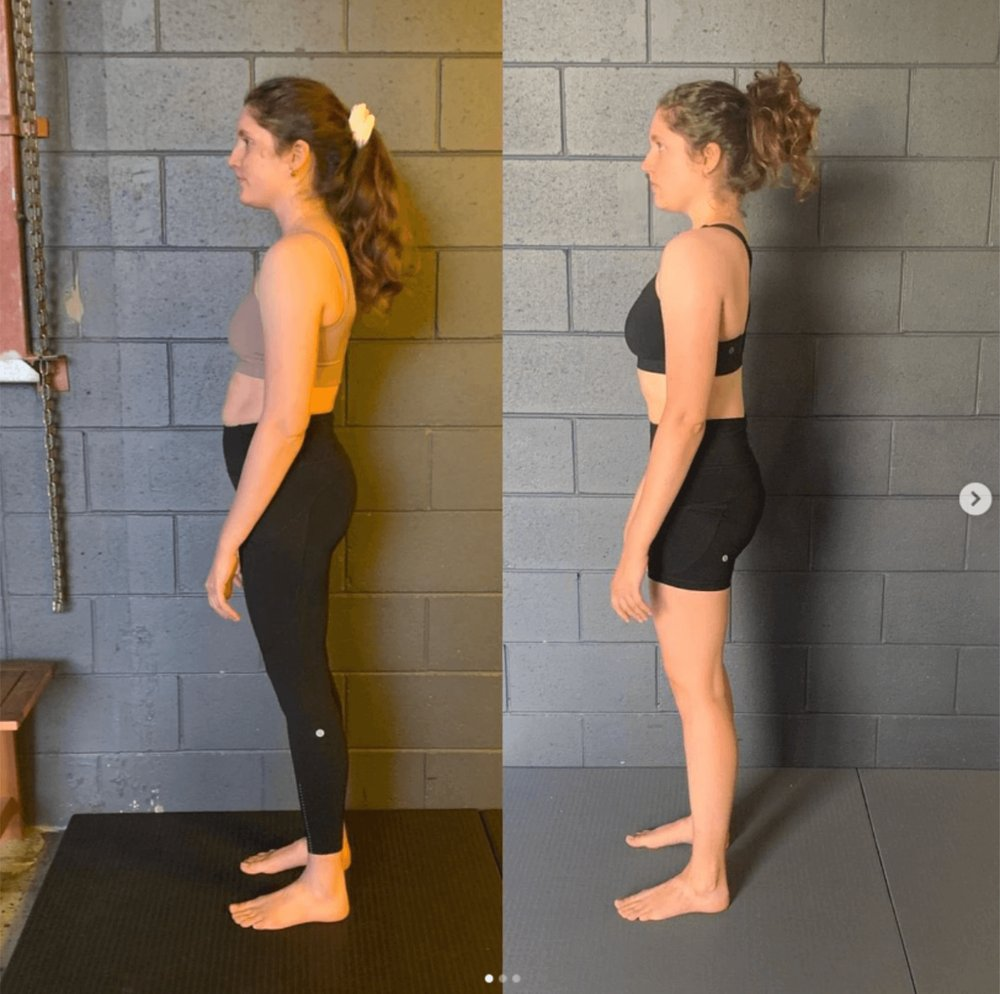

If you’ve ever been told you need to “activate your TVA” to fix your posture, protect your back, or stabilise your core — you’re not alone.
The transverse abdominis (TVA) has become one of the most talked-about muscles in fitness and rehab. Meanwhile, the superficial abs — the six-pack — are often dismissed as “just aesthetic.”
The truth is more nuanced — and more important.
At Functional Patterns Brisbane, we see people every week who have excellent TVA awareness and still struggle with pain, poor posture, or limited athletic performance.
That’s because the real issue isn’t which muscle is active — it’s how the system functions as a whole.
Understanding the transverse abdominis and superficial abs

What is the transverse abdominis?
The transverse abdominis is the deepest abdominal muscle. It wraps horizontally around the torso and contributes to:
-
regulation of intra-abdominal pressure
-
trunk stiffness
-
force transfer between upper and lower body
It does not move the spine in a visible way, which is why it’s often described as a “stabiliser.”
What are the superficial abs?
The rectus abdominis (six-pack) and external obliques are more superficial muscles. They:
-
flex and rotate the trunk
-
visibly shape the abdomen
-
contribute to movement, not just stiffness
They are not “bad” muscles — they’re simply not meant to work in isolation either.
Where most core training goes wrong
The common narrative goes like this:
Deep core = stability
Superficial abs = aesthetics
That oversimplification creates problems.
Most people:
-
isolate the TVA in static positions
-
brace constantly without movement
-
train “core stability” divorced from walking, running, or force transfer
This creates a rigid torso rather than a functional one.
A stiff core that doesn’t integrate with the hips, ribcage, and gait pattern often leads to:
-
back pain
-
hip issues
-
inefficient movement
-
reduced athletic performance
Core function is not the same as core activation
Here’s the key distinction:
Muscle activation ≠ movement function
In real human movement — walking, running, throwing, lifting — the core’s job is to:
-
transmit force
-
manage rotation
-
alternate tension and relaxation
-
adapt dynamically to load
The transverse abdominis does not work alone in these tasks.
Neither do the superficial abs.
They work together, in rhythm, within the context of gait.

Why isolating the TVA often backfires
When people focus on “keeping the TVA switched on” all the time, we often see:
-
restricted breathing mechanics
-
reduced pelvic movement
-
over-bracing during gait
-
compensatory tension elsewhere
Instead of improving posture or protecting the spine, this strategy can increase stress on the system.
At FP Brisbane, we don’t cue constant bracing — we restore timing, sequencing, and integration.

The Functional Patterns perspective on the core
From a Functional Patterns standpoint, the core:
-
is part of a whole-body system
-
must integrate with the feet, hips, and shoulders
-
is shaped by how you walk, stand, and load your body daily
The question isn’t:
“Can you activate your TVA?”
It’s:
“Can your trunk transfer force efficiently during gait without compensation?”
That’s a very different standard.
What real core training looks like
Effective core training:
-
happens in motion, not just on the floor
-
respects left-right asymmetry
-
integrates rotation, opposition, and load transfer
-
improves posture as a byproduct, not a goal
This is why endless planks, crunches, and hollow holds rarely solve long-term issues — even if they feel hard.
Why this matters for pain and performance
When the core is trained as an isolated structure:
-
the spine often absorbs excess load
-
hips underperform
-
movement efficiency drops
When the core is trained as part of a global movement system:
-
load is distributed more evenly
-
posture improves naturally
-
pain often reduces without direct symptom work
-
athletic output becomes smoother and more repeatable
Final thoughts
The transverse abdominis isn’t overrated — it’s just misunderstood.
The superficial abs aren’t the enemy — they’re simply part of a larger system.
If your core training doesn’t improve how you move through space, it’s missing the point.
At Functional Patterns Brisbane, we focus on restoring function, not chasing isolated muscle activation — because real strength shows up in movement, not drills.
Want to go deeper?
If you’re dealing with ongoing pain, postural issues, or performance limitations and feel like “core work” hasn’t helped, it may be time to reassess how your body is organised as a system.
Functional Patterns Brisbane offers movement-based assessments and training focused on long-term structural change, not temporary fixes.